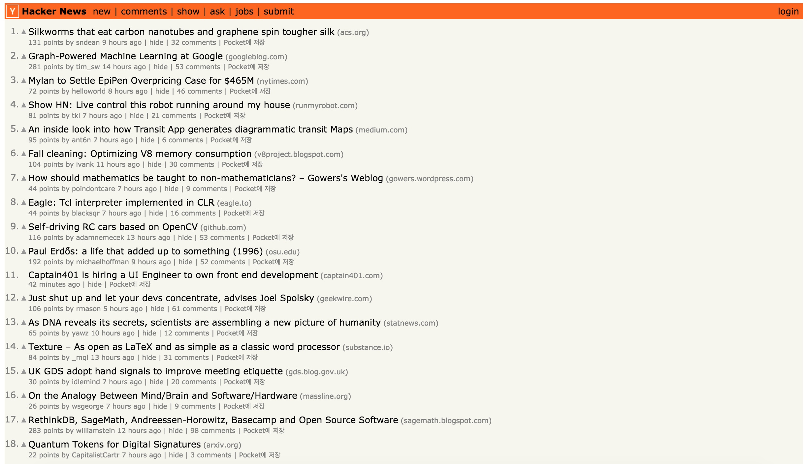
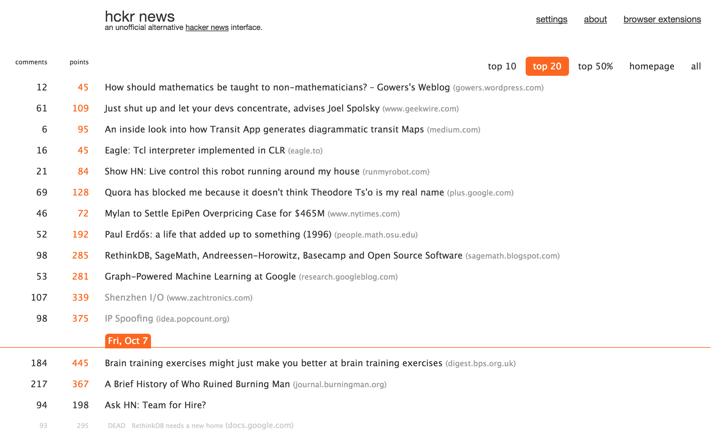

<!DOCTYPE html>

<html xmlns="http://www.w3.org/1999/xhtml" lang="markdown">
  <head>
    <meta charset="utf-8" />
    <title>해커 뉴스 &#8212; CS Univ Wiki 1.0.0 documentation</title>
    <link rel="stylesheet" href="../_static/alabaster.css" type="text/css" />
    <link rel="stylesheet" href="../_static/pygments.css" type="text/css" />
    <script type="text/javascript" id="documentation_options" data-url_root="../" src="../_static/documentation_options.js"></script>
    <script type="text/javascript" src="../_static/jquery.js"></script>
    <script type="text/javascript" src="../_static/underscore.js"></script>
    <script type="text/javascript" src="../_static/doctools.js"></script>
    <script type="text/javascript" src="../_static/language_data.js"></script>
    <link rel="index" title="Index" href="../genindex.html" />
    <link rel="search" title="Search" href="../search.html" />
   
  <link rel="stylesheet" href="../_static/custom.css" type="text/css" />
  
  
  <meta name="viewport" content="width=device-width, initial-scale=0.9, maximum-scale=0.9" />

  </head><body>
  

    <div class="document">
      <div class="documentwrapper">
        <div class="bodywrapper">
          

          <div class="body" role="main">
            
  <div class="section" id="id1">
<h1>해커 뉴스<a class="headerlink" href="#id1" title="Permalink to this headline">¶</a></h1>
<p>해커뉴스? 해커들의 뉴스인가요? 아닙니다. 흠… 『해커와 화가』라는 책을 읽어보셨나요? 음…  해커뉴스는 『해커와 화가』의 저자인 폴 그레이엄이 운영하고 있는 소셜 뉴스 사이트입니다. 사용자들이 게시물을 올리고, 사용자들이 추천과 비추천을 눌러서, 추천 수가 많은 게시물은 위로, 그렇지 않은 게시물은 아래로 보내는 형태인데요, 여기에 시간이라는 요소를 넣어, 추천 수가 많더라고 하더라도 시간이 지나면 점점 순위가 떨어지도록 하였습니다. 그러니까, 매일 마다 &quot;추천을 받는 새로운&quot; 게시물들이 상단을 차지한다는 것이죠. 해커뉴스는 IT 관련 핫 이슈들을 어디보다 빠르게 얻기 위해서 자주 사용하는 사이트입니다. 심지어, 해커뉴스 이펙트라는 신조어까지 만들 정도로 해커뉴스에서 뜨면, IT 세계에서 뜨는 것과 같다고 볼 정도이죠.[^1] 하지만, UI가 약간 불편한 편입니다. 이것을 해결하면서, 빠르게 정보를 얻는 방법을 알아봅시다.</p>
<p>[^1]: <a class="reference external" href="http://flowonweb.com/post/46937988199/the-hacker-news-effect">해커뉴스 이펙트</a>라는 글을 참고해봅시다. :)</p>
<div class="section" id="id2">
<h2><a class="reference external" href="https://news.ycombinator.com/">해커뉴스</a><a class="headerlink" href="#id2" title="Permalink to this headline">¶</a></h2>
<p></p>
<p>일반적인 서양의 BBS 형태의 계시판과 많이 닮았습니다. 여기서 눈길이 가는 아티클을 클릭해서 보시고, 괜찮으면 추천을 누르시면 됩니다.</p>
</div>
<div class="section" id="hckrnews">
<h2><a class="reference external" href="http://hckrnews.com/">hckrnews</a><a class="headerlink" href="#hckrnews" title="Permalink to this headline">¶</a></h2>
<p></p>
<p>개인적으로 추천하는 사이트입니다. 해커뉴스의 글들 중 top 10, top 20, top 50% 등으로 나눠서 필터링을 할 수 있는데, 기존 해커뉴스에서는 진짜 끝도 없는 아티클들(그 중에는 쓸모 없는게 꽤 되죠)을 다 볼 필요 없이 데일리 top 10이나 top 20만 보면서 정신적 피로를 많이 줄일 수 있습니다. 모바일 버전이 없다는 것이 좀 아쉽습니다.</p>
</div>
<div class="section" id="id3">
<h2><a class="reference external" href="http://www.hackernewsletter.com/">해커뉴스 뉴스레터</a><a class="headerlink" href="#id3" title="Permalink to this headline">¶</a></h2>
<p>해커뉴스의 뉴스레터입니다. 매번 사이트 가기 귀찮아하시는 분들에게 추천합니다.</p>
</div>
</div>


          </div>
          
        </div>
      </div>
      <div class="sphinxsidebar" role="navigation" aria-label="main navigation">
        <div class="sphinxsidebarwrapper">
<h1 class="logo"><a href="../index.html">CS Univ Wiki</a></h1>


<h3>Navigation</h3>

<div class="relations">
<h3>Related Topics</h3>
<ul>
  <li><a href="../index.html">Documentation overview</a><ul>
  </ul></li>
</ul>
</div>
<div id="searchbox" style="display: none" role="search">
  <h3 id="searchlabel">Quick search</h3>
    <div class="searchformwrapper">
    <form class="search" action="../search.html" method="get">
      <input type="text" name="q" aria-labelledby="searchlabel" />
      <input type="submit" value="Go" />
    </form>
    </div>
</div>
<script type="text/javascript">$('#searchbox').show(0);</script>


        </div>
      </div>
      <div class="clearer"></div>
    </div>
    <div class="footer">
      &copy;2019, benjioh5.
      
      |
      Powered by <a href="http://sphinx-doc.org/">Sphinx 2.2.1</a>
      &amp; <a href="https://github.com/bitprophet/alabaster">Alabaster 0.7.12</a>
      
      |
      <a href="../_sources/정보-획득/해커뉴스.md.txt"
          rel="nofollow">Page source</a>
    </div>

    

    
  </body>
</html>